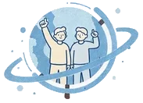
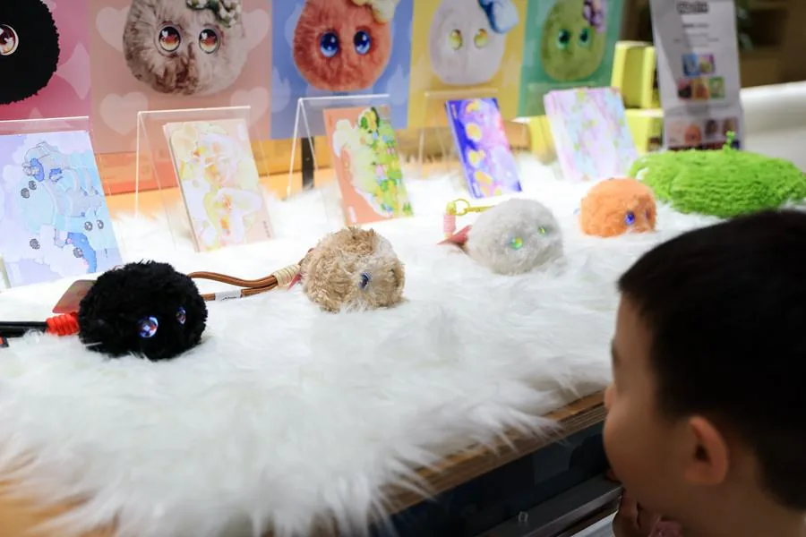
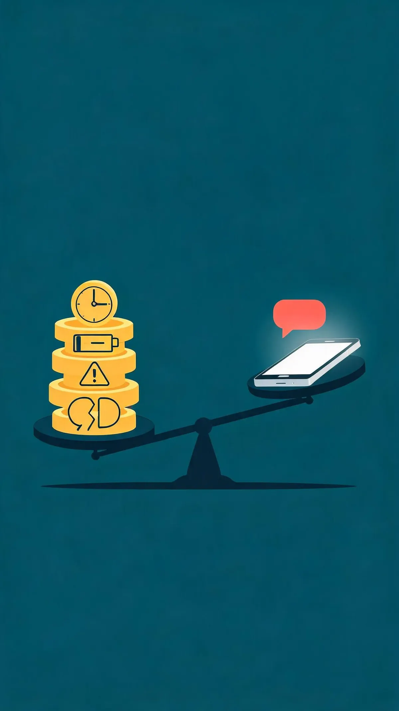
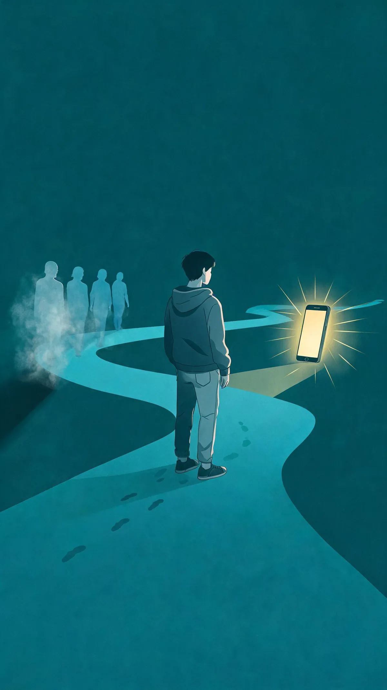
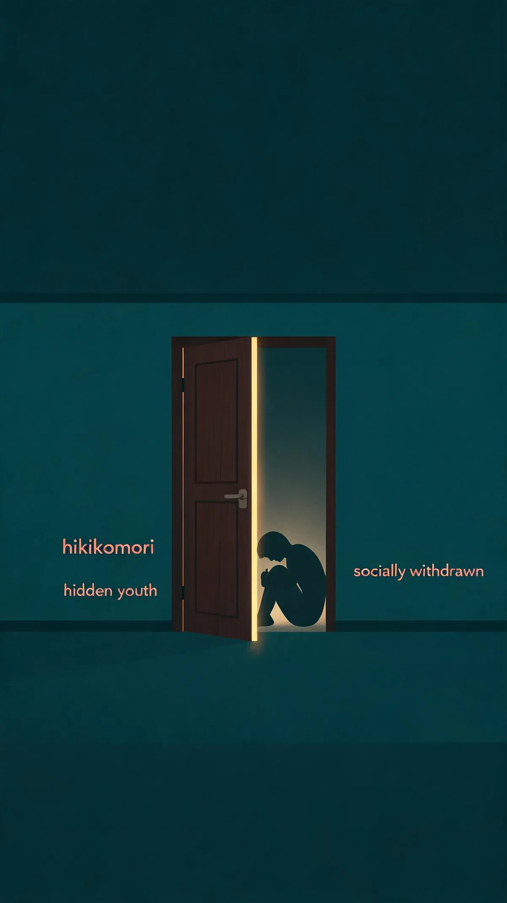
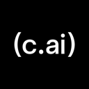
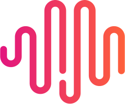

PART 01
永远在线的"搭子"，
随叫随到，从不疲倦；
可越聊，为什么越孤独？

"搭子"原本指向一种轻量的真实连接：饭搭子、球搭子、旅行搭子，是现实里恰好同路的人。但中国青少年研究中心对全国 8563 名中小学生的调查显示，越来越多青少年正在把这一角色交给算法。
当"搭子"从真人变成算法，问题的关键就不再是"它能不能陪"，而是"它在用什么方式陪，以及这种陪伴把青少年带向了哪里"。

2025年12月21日，深圳全球创新旗舰店inno100，一名儿童与AI玩具"芙崽Fuzozo"互动。新华社记者 毛思倩 摄；刊于新华网《民生观察丨AI玩具带娃透视》（2026-03-23）
AI 情感陪伴，官方表述是"拟人化互动服务"。它和工具型 AI 的分野不在于技术高低，而在于产品目标：智能客服要解决你的问题，情感陪伴要维持你对这段关系的投入。它通过模拟人格、语气和持续的回应，制造一种"被稳稳接住"的体验。
但这种体验的本质是算法对用户情感的顺应性反射。真人的陪伴之所以有意义，恰恰因为它不稳定、有摩擦、需要协商；而 AI 陪伴的"温柔"，是去除了所有这些"麻烦"之后的人工制品。它提供的不是友谊，而是一种没有风险的陪伴模拟。
| 对比维度 | AI 情感陪伴 | 真人朋友 | 助手型 AI |
|---|---|---|---|
| 在线时间 | 24 小时随时在线 | 有作息、会离开 | 24 小时在线，但为任务而生 |
| 回应方式 | 无条件顺着说 | 会分歧、会吵架 | 客观但模式化 |
| 关系性质 | 以"陪伴"为卖点的付费关系 | 平等真实的关系 | 工具关系 |
| 退出成本 | 厂商可随时改动或关闭 | 需要经营与维护 | 随时可弃 |
| 成长价值 | 短期情绪缓冲，长期可能削弱社交能力 | 提供真实反馈与成长 | 提升效率，需自行鉴别 |
〔说明：下表为本文的归纳对比，非实证研究结论，"回应方式""成长价值"两行属编辑部归纳。〕
当“搭子”从真人变成算法，这不再是个别孩子的秘密。把镜头从那个深夜向 AI 倾诉的少年身上拉远——78.5% 的未成年网民已在使用 AI，全国生成式 AI 用户达 6.02 亿，其中近三成（约 1.59 亿）是 19 岁以下青少年，占比全年龄段最高。口径提示：78.5%（蓝皮书，未成年网民）与序言的 61.7%（中小学生）来自不同调查，不作相互递推。
需求侧只是冰山一角，供给侧早已狂热。2025 年中国 AI 情感陪伴市场规模达 38.7 亿元，同比暴增 219%；Glow 上线四个月用户近 500 万，星野与 Talkie 合并月活超 2000 万。资本与产品正疯狂“造”AI 伴侣，而不只是被动“用”它。
数字之外，更要看速度。CNNIC 数据显示，这条曲线上最陡的一段出现在 2025 年上半年：从 2024 年 12 月的 2.49 亿 到 2025 年 6 月的 5.15 亿，仅半年净增 2.66 亿 人——半年里翻了一番。
这不是中国独有的故事，越过国界线。美国、韩国、日本——三个互联网生态截然不同的国家，少年们几乎在同一窗口期转向了 AI。四国统计口径不一，数据不能直接比高低，但放在一起看，最值得注意的不是渗透率谁高谁低，而是他们走向 AI 的方式，走了四条完全不同的路：
韩国是渗透率顶格后的试验场——94.4% 的青少年用过 AI 聊天，其中 75.3% 曾把 AI 的话当真，认真考虑过照做，甚至付诸行动。
美国是日常化下沉——越严肃的事，越有人先找 AI。33% 的美国青少年在严肃话题上，首选倾诉对象是 AI 而非真人。
日本是角色经济驱动——一个虚拟角色就能撑起一门生意，情感消费被封装成产品。
中国则是规模最大、也最低龄的一站——数千万未成年人，从小学阶段就开始接触 AI 陪伴。
入口各不相同，出口却可能指向同一个地方：一代人正在把情感寄托，从真人身上批量迁移到算法身上。
四国数据（美国 72%、韩国 94.4%、中国 61.7%）拼出同一幅图景：这不是地域特例，而是一代人的共同处境。镜头停下，追问随之而来：为什么偏偏是这一代，早早把情感寄托交予算法？伴随生成式 AI 长大的"第一代 AI 原住民"，其处境有三种解释——从"现实关系变贵"到"线下社交让渡"，再到"长期退缩"。视角各异，看透这代人的孤独。

评论观点中国青年报 2026 年 7 月的评论《从"无他者的亲密"看 AI 情感陪伴的限度》把原因说得很直接：青年转向 AI，"根源在于现实亲密关系日益呈现高成本、高风险的特征——学业与职业竞争挤压了交往时间，社会流动加剧了人际关系的原子化，而亲密关系中的误解、拒绝与伤害，又构成了难以回避的情感代价"。相较之下，AI 更低成本、更低风险，也更可控。这是评论观点，不是实证结论——但它描述的那种原子化，许多人认得。
来源：中国青年报（2026-07-20）zqb.cyol.com
理论框架：Eva Illouz《Cold Intimacies》(Polity, 2007)

实证 · 相关2026 年一项针对中国 843 名 18—29 岁青年的心理学研究（《Frontiers in Psychology》）发现：AI 陪伴与孤独之间，主要通过使用者自述的"线下社交让位"传导；而这条链条只在"关系性互依自我建构"程度中高的人身上显著——互依程度低的人身上并不成立。研究者也提醒：这是初步的、相关性结果，"线下社交让位"来自受访者的自述归因。把关系看得比独立更重，是一种在集体主义文化中更常见的自我建构。这或许是部分少年更早转向 AI 的一个实证线索。
来源：Xiao, T. (2026) Frontiers in Psychology 17, n=843
frontiersin.org

同行评议医学与社会工作文献里，这类长期退缩在家的年轻人，在不同地区有各自的名称：日本的"ひきこもり"（蛰居）、中国内地与香港、新加坡的"hidden youth"、韩国的"socially withdrawn youth"，欧美也有类似的"social withdrawal"研究。这不是某一国的青春期叛逆，而是一种在多地都被观察到的社会现象。
在韩国，"三抛／五抛"（2011 年《京乡新闻》造词，指年轻人放弃恋爱、结婚、生育等）；在日本，"推し文化"（为虚拟角色投入情感与金钱）——这些文化现象常被拿来解释年轻人的退缩倾向，但它们是文化背景，不是量化依据，这里只作背景保留。
来源：Wong, J. C. M. et al. (2019) Frontiers in Psychiatry 10:512
pmc.ncbi.nlm.nih.gov
北京中科普心理健康促进中心常务副主任唐义诚，把沉迷 AI 聊天的孩子归因为"三种缺失"——缺同伴、缺游戏、缺父亲。但根子只有一个：现实里，没有人在听。观点来源
同伴疏离、嬉戏被压、父职缺席，这些空白本该由真实关系填补，却被算法以"永远在线"的温柔接管。寄情虚拟不是新鲜事，但 AI 的"被看见"是此前的网游、动漫都给不了的。也正因如此，它更难戒断。
独生子女政策遗留的"独自长大"惯性，加上城市化让邻里同伴网络稀薄，少年在现实中"找不到人说话"。
学业压力与屏幕化娱乐挤压了线下自由游戏空间，"无所事事一起待着"的同伴时光在减少。
父亲在家庭教育中常缺席或仅承担"管教"角色，缺少日常情感陪伴，留出的空白被 AI 填补。
镜头最后一次拉远——这次拉开的是时间。每一代少年都曾把情感寄托在"永远在线"的载体上——笔友、电视、游戏、QQ、短视频。AI 的不同在于：它是第一个"会回话"的载体，而且回得越来越像人。
2014 年 5 月，微软（亚洲）互联网工程院发布小冰——第一个以"情感连接"为研发目标的 AI；2017 年 Replika 上线，主打"会倾听的虚拟朋友"；2021 年 Character.AI 上线，"扮演"风靡青少年；2022 年 10 月，MiniMax 在国内上线 Glow，四个月近 500 万用户，2023 年 3 月因合规下架；2022 年 11 月 ChatGPT 发布，"助手"被少年当成"树洞"；2023 年 6 月 Talkie 上线海外，9 月国内版"星野"上线；2025 年 10 月 29 日，Character.AI 宣布移除 18 岁以下用户的开放式聊天功能。


把镜头拉到更长的时间尺度：未成年网民规模、互联网普及率、短视频渗透率——基础设施已经见顶，增长转移到了新的载体上。三条曲线来自不同调查序列，各自连线、互不混用。
21.5% 的少年只想和 AI 聊天——是找到了新搭子，还是越聊越孤独的开始？
下 一 章
第二章 · 茧房 · 情感新织
数据有脸——三个少年的剪影。